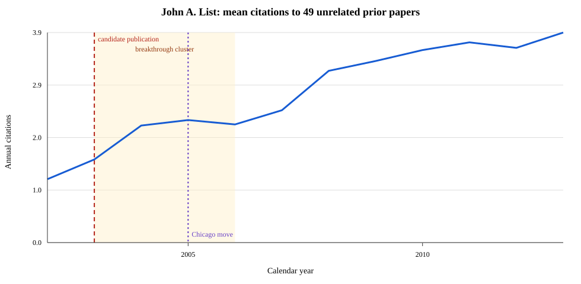

OpenAlex author: https://openalex.org/A5083530241. Descriptive output; not a causal estimate.
Baseline diagnostic: the top paper does not exceed 50% of this economics-portfolio citation denominator, so this author is not treated under the baseline definition.
Using the same 49 papers throughout: 2002 baseline 1.18; 2003–04 1.87; 2005–06 2.24; 2007–09 3.02 mean annual citations per paper. The pattern is gradual and cannot separate the publication cluster from the 2005 Chicago move.

The top 1, 5, and 10 focal papers account for 35.9%, 87.4%, and 104.1% of the net increase from 2002 to the 2007–09 average.
| Prior paper | Year | 2002 | 2007–09 mean | Change |
|---|---|---|---|---|
| What Experimental Protocol Influence Disparities Between Actual and Hypothetical Stated Values? | 2001 | 1.0 | 33.3 | +32.3 |
| Gender differences in revealed risk taking: evidence from mutual fund investors | 2002 | 0.0 | 14.0 | +14.0 |
| Bureaucratic corruption, environmental policy and inbound US FDI: theory and evidence | 2002 | 0.0 | 11.3 | +11.3 |
| The environmental Kuznets curve: does one size fit all? | 1999 | 7.0 | 18.0 | +11.0 |
| Environmental Regulations and New Plant Location Decisions: Evidence from a Meta‐Analysis | 2002 | 1.0 | 11.0 | +10.0 |
| Calibration of the difference between actual and hypothetical valuations in a field experiment | 1998 | 5.0 | 10.3 | +5.3 |
| US county-level determinants of inbound FDI: evidence from a two-step modified count data model | 2001 | 5.0 | 9.0 | +4.0 |
| Calibration of Willingness-to-Accept | 2002 | 1.0 | 3.7 | +2.7 |
| Measuring the effects of air quality regulations on "dirty" firm births: Evidence from the neo- and mature-regulatory periods | 2000 | 0.0 | 1.7 | +1.7 |
| The hidden costs and returns of incentives: trust and trustworthiness among CEOs | 2002 | 0.0 | 1.3 | +1.3 |
Does Market Experience Eliminate Market Anomalies? (2003), 1,214 citations. “Unrelated” means this candidate does not cite the prior focal paper.
| Rank | Title | Year | Citations | Share | Eligible focal |
|---|---|---|---|---|---|
| 1 | Does Market Experience Eliminate Market Anomalies? | 2003 | 1,214 | 10.1% | no |
| 2 | What Experimental Protocol Influence Disparities Between Actual and Hypothetical Stated Values? | 2001 | 973 | 8.1% | yes |
| 3 | Do Professional Traders Exhibit Myopic Loss Aversion? An Experimental Analysis | 2005 | 777 | 6.5% | no |
| 4 | The behavioralist as tax collector: Using natural field experiments to enhance tax compliance | 2017 | 730 | 6.1% | no |
| 5 | Gender differences in revealed risk taking: evidence from mutual fund investors | 2002 | 555 | 4.6% | yes |
| 6 | The Effects of Environmental Regulations on Foreign Direct Investment | 2000 | 484 | 4.0% | yes |
| 7 | The environmental Kuznets curve: does one size fit all? | 1999 | 466 | 3.9% | yes |
| 8 | Do Explicit Warnings Eliminate the Hypothetical Bias in Elicitation Procedures? Evidence from Field Auctions for Sportscards | 2001 | 454 | 3.8% | no |
| 9 | Effects of Environmental Regulations on Manufacturing Plant Births: Evidence from a Propensity Score Matching Estimator | 2003 | 402 | 3.4% | no |
| 10 | Are CO2 Emission Levels Converging Among Industrial Countries? | 2003 | 391 | 3.3% | no |
| 11 | The Environmental Kuznets Curve: Real Progress or Misspecified Models? | 2003 | 355 | 3.0% | no |
| 12 | Bureaucratic corruption, environmental policy and inbound US FDI: theory and evidence | 2002 | 289 | 2.4% | yes |
| 13 | One Swallow Doesn't Make a Summer: New Evidence on Anchoring Effects | 2013 | 280 | 2.3% | no |
| 14 | Consumers’ misunderstanding of health insurance | 2013 | 263 | 2.2% | no |
| 15 | Environmental Regulations and New Plant Location Decisions: Evidence from a Meta‐Analysis | 2002 | 260 | 2.2% | yes |
| 16 | Calibration of the difference between actual and hypothetical valuations in a field experiment | 1998 | 230 | 1.9% | yes |
| 17 | Consequentiality: A Theoretical and Experimental Exploration of a Single Binary Choice | 2014 | 224 | 1.9% | no |
| 18 | The effect of varying the causes of environmental problems on stated WTP values: evidence from a field study | 2004 | 220 | 1.8% | no |
| 19 | Using Choice Experiments to Value Non-Market Goods and Services: Evidence from Field Experiments | 2006 | 197 | 1.6% | no |
| 20 | How Elections Matter: Theory and Evidence from Environmental Policy* | 2006 | 178 | 1.5% | no |
cited_by_count; they are not an all-field career denominator.